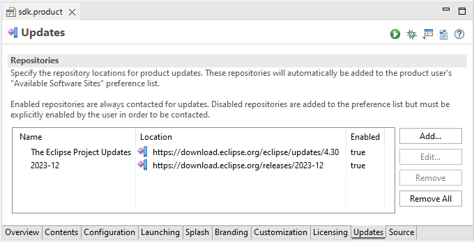

Here are descriptions of some of the more interesting or significant changes made to the Plug-in Development Environment (PDE) for the 4.30 release of Eclipse. They are grouped into:
Editors |
|
| Support for names of product update repositories |
The PDE Product Editor now supports in its Updates section to specify the Name of each update repository.
In the assembled product the names will be presented to a user in the preferences under Available Software Sites.
 |
| Removed support for unnecessary attributes in Features and Products |
The Feature editor has its support for the following attributes of plugin elements removed:
feature.xml file.
They are ignored when present in an existing Feature and removed by the editor upon the next modification through the editor.
The
.product file.
They are ignored when present in an existing Product and removed by the editor upon the next modification through the editor.
|